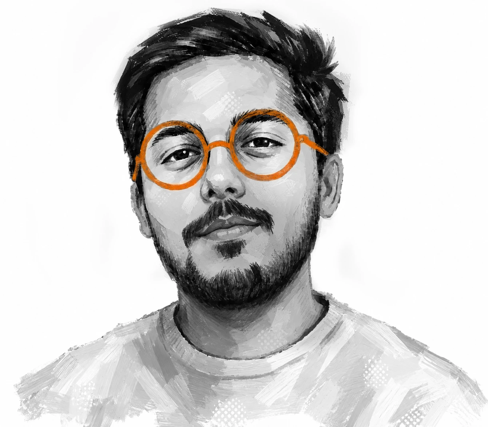

Research interests
- Human Computer Interaction
- Human-Centered AI
- Computer Vision
- Digital Health
- Accessibility
- Trust in AI Systems
Find me
- srchayan@gmail.com
- chayan.design
- Boston, MA
Bio
Designer and researcher in human computer interaction. I study how people understand and come to trust AI, computer vision and health systems in everyday life, and I design the layer between the model and the person: what a system should show, when it should speak up, and what it should never do.
My research on recovering from an ACL injury at home, started at Northeastern as Align, became Air Health, a funded startup that coaches movement through the phone camera. I am its Senior Product Designer. Other work explores computer vision in AR glasses for safer transit and sensory friendly navigation for public spaces.
I hold an MS in Human Computer Interaction (Experience Design) from Northeastern University, and bring six years of product design across health tech, fintech and SaaS, leading research, prototyping and usability testing.
Research
-
Research · 2025Computer vision + AI
Align to Air Health: Camera-Based Movement Coaching for At-Home ACL Recovery
Northeastern University research, now a funded product · Case study
-
Research · 2025Accessibility
SensEase: Sensory Friendly Navigation for Public Spaces
ARTG 6600, Northeastern University · Case study
-
Research · 2024Computer vision · AR
SafeVision: Computer Vision in AR Glasses for Safer Transit
Design experiment, Northeastern University · Case study
Education
Graduated Dec 2025
Northeastern University
MS in Human Computer Interaction (Experience Design)
Research Methods, Design and Accessibility, Design Systems, Design for Behavior (health), Human-Centered AI · Boston, MA
Undergraduate
Daffodil International University
BS in Multimedia & Creative Technology
Undergraduate thesis in HCI · Dhaka, Bangladesh
Industry experience
Feb 2026 to Present
Senior Product Designer · Air Health
Leading 0 to 1 design of an AI adaptive fitness platform; working Swift/SwiftUI prototypes cut design to tested interaction time by 60%. Mentoring 3 designers.
Nov 2023 to Aug 2024
Product Designer · Elas
Improved usability of a data-dense construction operations dashboard by 62%; built an accessible atomic design system.
Apr 2022 to May 2023
UX/UI Designer · Scripla
Scalable, accessible design system with strong stakeholder adoption; design reviews cut sprint turnaround by 30%.
Jan 2021 to Apr 2022
UI/UX Designer · Plaeto
Led MVP design from concept to launch in 9 months, supporting a $2.5M raise.
Feb 2020 to Jan 2021
UI/UX Designer · Twinbit
Led a 6 designer team shipping top ranked apps with 100K+ reviews and 2x revenue growth.
Honors & awards
ICT Carnival
1st Place, Motion Graphics
Selected from 100+ participants.
Skills & tools
Research
Design of user studies, qualitative analysis, quantitative analysis, user research, usability testing, A/B testing, journey mapping, information architecture, accessibility (WCAG 2.1 AA)
Design
UI/UX design and prototyping, visualizations, human-centered AI, agentic experience design, interaction design, design systems, motion
Development
Python, web development, mobile app development, database development, agent development
Prototyping
Swift/SwiftUI, HTML, CSS, Claude, Cursor, Lovable, Framer
Tools
Figma, Adobe After Effects, Illustrator, Photoshop, Miro, Jitter, Jira